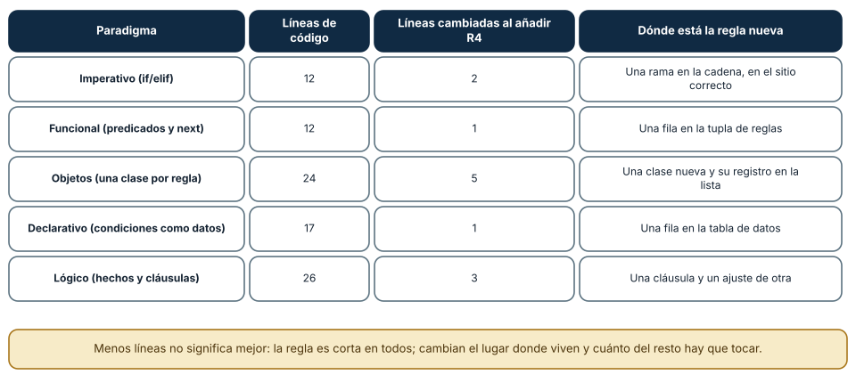
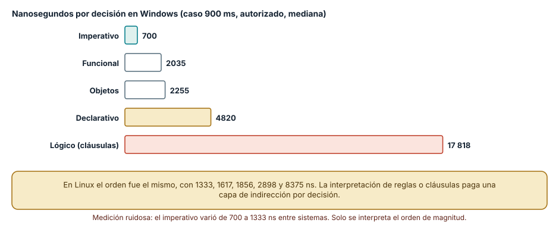
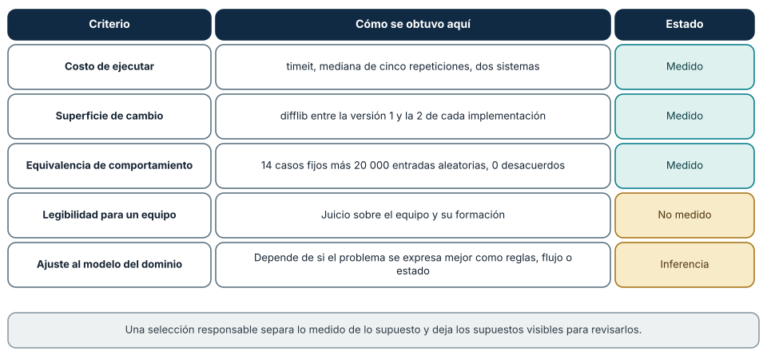

← SE-081 — Programación concurrente y actores · ↑ Parte 06 · 📚 Índice completo · 🌐 Portal · SE-083 — Taller: una regla de negocio en cinco paradigmas →
Punto profesional y fundamento pedagógico
Punto profesional. La clase existe para seleccionar y combinar paradigmas por fuerzas del problema y costo de adaptación.
Por qué aparece aquí. Se sitúa después de Programación concurrente y actores y antes de Taller: una regla de negocio en cinco paradigmas: convierte el conocimiento anterior en una decisión observable que la clase siguiente podrá reutilizar. La continuidad se comprueba en el artefacto, no por compartir vocabulario.
Error conceptual que debe corregir. Elegir paradigma por moda o forzar uno sobre todas las capas.
Secuencia de aprendizaje. Antes de leer la solución, el estudiante predice el resultado del caso normal y del error conceptual anterior. Luego explica un caso resuelto paso a paso, construye un contraejemplo que cambie la decisión y, sin consultar el texto, reconstruye el mecanismo y lo aplica a una entrada nueva. La secuencia usa predicción, explicación propia, contraste y recuperación. ICAP distingue participación de construcción de conocimiento; How People Learn II exige conectar conocimiento previo, contexto y transferencia; la práctica de recuperación respalda producir de nuevo la explicación tras una demora; y Education for Life and Work exige devolución que explique la causa del error.
Evidencia de aprendizaje. Decision-record.md con alternativas, fuerzas, adaptadores y pérdida aceptada. Debe contener predicción previa, observación, explicación causal, contraejemplo, criterio de aceptación y una nota de qué dato haría cambiar la conclusión.
Límite de la conclusión. La matriz orienta una decisión contextual, no produce un ganador universal.
Trazabilidad fuente → afirmación
| Fuente primaria u oficial | Afirmación que respalda | Lo que no prueba |
|---|---|---|
| Python Language Reference | Semántica de sentencias, funciones, clases, generadores y corrutinas; autoridad: Python Software Foundation | No demuestra por sí sola que el artefacto del estudiante sea correcto. |
| The Rust Programming Language | Ownership, enums, traits, errores y concurrencia sin carreras de datos; autoridad: Rust project | No demuestra por sí sola que el artefacto del estudiante sea correcto. |
| SWEBOK Guide v4.0a | Construcción, diseño y fundamentos profesionales; autoridad: IEEE Computer Society | No demuestra por sí sola que el artefacto del estudiante sea correcto. |
Antes de empezar
Esta clase continúa el motor de reglas comparado de la Parte 06. Recupera la evidencia de la clase anterior, añade una decisión propia de Selección y combinación responsable de paradigmas y deja un artefacto que la clase siguiente deberá consumir. La pregunta activa es: ¿Cómo elegir y combinar paradigmas a partir de fuerzas del problema y evidencia?
Prerrequisitos
- Haber completado la clase anterior o reconstruir su contrato y evidencia.
- Python 3.11 o posterior, terminal, editor y Git; un segundo runtime es opcional y debe declararse.
- Trabajar con fixtures sintéticos: ninguna observación necesita datos de una persona o sistema real.
Problema auténtico
El equipo quiere objetos para el dominio, flujos reactivos para entradas y reglas declarativas para política. Cada elección aislada parece razonable, pero las conversiones multiplican tipos, errores y puntos de depuración.
Objetivos observables
Al terminar podrás explicar los cinco mecanismos de esta clase, predecir su comportamiento antes de ejecutar, construir un caso normal y uno límite, diagnosticar el fallo controlado, comparar una alternativa y entregar evidencia que otra persona pueda reproducir.
Mapa conceptual
Ver la notación fuente del diagrama
flowchart LR
N1[Fuerzas del problema] --> N2[Semántica antes que sintaxis] --> N3[Fronteras entre modelos] --> N4[Costo cognitivo / operativo] --> N5[Decisión reversible / experimento]
N5 -->|fallo o cambio| N1El mapa se lee como una cadena de razonamiento, no como fases obligatorias del runtime. La flecha de retorno indica que un fallo o cambio de requisito obliga a revisar el modelo inicial; no autoriza a parchear solo la última salida.
Temas y por qué importan
| Tema | Por qué cambia una decisión profesional | Evidencia mínima |
|---|---|---|
| Fuerzas del problema | La elección parte de estado, temporalidad, concurrencia, tasa de cambio, auditabilidad y habilidades del equipo. | Predicción, traza causal y contraejemplo de Fuerzas del problema en decision-record.md |
| Semántica antes que sintaxis | Dos implementaciones son comparables si aceptan el mismo dominio y producen resultados equivalentes para normal, límite y error. | Predicción, traza causal y contraejemplo de Semántica antes que sintaxis en decision-record.md |
| Fronteras entre modelos | Combinar modelos exige adaptadores: evento a valor, objeto a registro, resultado a excepción o mensaje. | Predicción, traza causal y contraejemplo de Fronteras entre modelos en decision-record.md |
| Costo cognitivo y operativo | Una solución elegante para especialistas puede ser inoperable para el equipo que la mantiene. | Predicción, traza causal y contraejemplo de Costo cognitivo y operativo en decision-record.md |
| Decisión reversible y experimento | Cuando la evidencia no basta, se limita la apuesta: un slice, criterios y fecha de revisión. | Predicción, traza causal y contraejemplo de Decisión reversible y experimento en decision-record.md |
Conceptos y decisiones
1. Fuerzas del problema
La elección parte de estado, temporalidad, concurrencia, tasa de cambio, auditabilidad y habilidades del equipo. Un paradigma es adecuado cuando vuelve directas las propiedades dominantes. Popularidad o brevedad no son fuerzas técnicas suficientes.
2. Semántica antes que sintaxis
Dos implementaciones son comparables si aceptan el mismo dominio y producen resultados equivalentes para normal, límite y error. Contar líneas o tokens sin verificar semántica premia omisiones. El motor de reglas comparado usa fixtures comunes y normaliza solo diferencias de presentación.
3. Fronteras entre modelos
Combinar modelos exige adaptadores: evento a valor, objeto a registro, resultado a excepción o mensaje. Cada traducción puede perder orden, identidad o información de error. El contrato de la frontera debe declarar qué se preserva y qué se descarta.
4. Costo cognitivo y operativo
Una solución elegante para especialistas puede ser inoperable para el equipo que la mantiene. Se consideran trazabilidad, tooling, profiling, contratación, ecosistema y respuesta a incidentes. El costo no invalida innovación, pero impide presentarla como gratuita.
5. Decisión reversible y experimento
Cuando la evidencia no basta, se limita la apuesta: un slice, criterios y fecha de revisión. Una matriz ponderada ayuda a hacer supuestos visibles, no produce una verdad automática. El resultado debe registrar contraejemplos que cambiarían la decisión.
La misma regla, cinco formas: lo que se midió y lo que no
Para comparar paradigmas sin discutir en abstracto se implementó una sola regla de dominio de cinco maneras, con el mismo contrato de entrada (latency_ms, authorized) y de salida (action, rule). La regla: entrada incompleta o inválida se rechaza; sin autorización se deniega; con latencia superior a 800 ms se recomienda inspeccionar el transporte; en otro caso no se actúa. Las cinco versiones fueron: imperativa (if/elif), funcional (tupla de predicados evaluada con next), orientada a objetos (una clase por regla y un motor), declarativa (condiciones como datos interpretadas por un evaluador) y lógica (hechos y cláusulas con resolución). Las cinco aprobaron los mismos 14 casos fijos y no discreparon en ninguna de 20 000 entradas aleatorias, en Windows y en Linux.
El tamaño en líneas no vacías fue 12 (imperativa), 12 (funcional), 24 (objetos), 17 (declarativa) y 26 (lógica). Después se añadió una regla nueva (R4: latencia superior a 2000 ms y autorizado, escalar) y se contó cuántas líneas cambiaron: 2, 1, 5, 1 y 3. Lo que la cifra expresa es la superficie de cambio, no la calidad: la regla es una sola frase en todas, pero en la versión de objetos exige una clase nueva y su registro, y en la lógica obliga a ajustar la cláusula vecina para que sigan siendo excluyentes.

Cómo leer la figura. Cada fila es un paradigma; las dos columnas numéricas son el tamaño y el costo de cambio de la misma regla. Dónde deja de valer: una regla de una condición favorece las formas que añaden una fila; con reglas que dependen unas de otras, o con estado entre decisiones, la comparación cambiaría y el imperativo podría ser el más claro. Las líneas son una medida tosca de esfuerzo y no incluyen pruebas ni documentación.
El costo de ejecutar cada interpretación
El mismo caso (900 ms, autorizado) tardó, por decisión y en Windows, unos 700 ns en la versión imperativa, 2035 ns en la funcional, 2255 ns en la de objetos, 4820 ns en la declarativa y 17 818 ns en la lógica. En Linux fueron 1333, 1617, 1856, 2898 y 8375 ns. La medición es ruidosa (la imperativa varió casi el doble entre sistemas) y solo el orden de magnitud es sólido: cuanto más se interpreta la regla en tiempo de ejecución (predicados, objetos, datos, cláusulas), más indirección se paga por decisión.
Esa indirección es la contrapartida de lo que se gana: reglas que se pueden listar, cambiar sin editar el evaluador o explicar. Que cinco decisiones por segundo cuesten 90 µs o 3,6 µs no cambia nada; que cinco millones por segundo cuesten una diferencia de núcleos sí. La elección se toma con la carga prevista, no con el microbenchmark.

Cómo leer la figura. Cada barra es la mediana de cinco repeticiones de 20 000 llamadas para una implementación, en el orden de menor a mayor interpretación. Dónde deja de valer: no incluye entrada y salida, serialización ni concurrencia; los motores reales (Prolog, bases de reglas) se compilan y son más rápidos que una cláusula interpretada en Python. Es una comparación de cinco programas en Python, no de cinco lenguajes.
Qué evidencia respalda cada criterio
Elegir un paradigma es una decisión con criterios, y no todos se pueden medir del mismo modo. En esta práctica el costo de ejecutar se midió con timeit, la superficie de cambio con la diferencia de líneas entre dos versiones, y la equivalencia de comportamiento con 14 casos y 20 000 entradas aleatorias. En cambio, la legibilidad para un equipo concreto no se midió: depende de su formación. Y el ajuste al modelo del dominio es una inferencia: un problema de reglas encaja con declarativo o lógico, un flujo de eventos con reactivo y un cálculo transformador con funcional, pero ninguna medición lo prueba.
Una selección responsable deja visible esa frontera. Escribe qué criterios se midieron, cuáles son juicios y con qué dato cambiaría la conclusión (por ejemplo, «si las reglas pasan de 5 a 500, o las edita un equipo no programador, se revisa»).

Cómo leer la figura. Las filas teal son criterios con medición reproducible; las doradas son juicio o inferencia. Dónde deja de valer: la lista es la de este experimento; un proyecto real añade criterios como contratación, herramientas, madurez de bibliotecas, requisitos regulatorios y dominio del equipo. Ningún criterio de la tabla es una regla universal.
Definiciones de trabajo
- fuerzas del problema: la elección parte de estado, temporalidad, concurrencia, tasa de cambio, auditabilidad y habilidades del equipo.
- semántica antes que sintaxis: dos implementaciones son comparables si aceptan el mismo dominio y producen resultados equivalentes para normal, límite y error.
- fronteras entre modelos: combinar modelos exige adaptadores: evento a valor, objeto a registro, resultado a excepción o mensaje.
- costo cognitivo y operativo: una solución elegante para especialistas puede ser inoperable para el equipo que la mantiene.
- decisión reversible y experimento: cuando la evidencia no basta, se limita la apuesta: un slice, criterios y fecha de revisión.
Las definiciones son operativas para el motor de reglas comparado. No convierten términos con historia más amplia en sinónimos y deben contrastarse con la documentación primaria enlazada al final.
Ejemplo mínimo
| Fuerza | Imperativo | Funcional | Reglas | Reactivo | Actores |
|---|---:|---:|---:|---:|---:|
| auditar decisión | 2 | 3 | 5 | 2 | 3 |
| presión de flujo | 2 | 3 | 2 | 5 | 4 |
| fallo aislado | 1 | 3 | 2 | 3 | 5 |Antes de ejecutar, predice estado, resultado y error. Después registra versión, comando y salida. Si el fragmento es pseudocódigo o pertenece a otro lenguaje, etiquétalo como tal y no afirmes que fue ejecutado.
Ejemplo profesional
En el motor de reglas comparado, una recomendación contiene acción, evidencia usada, versión de política y explicación. La implementación de esta clase debe conservar ese contrato aunque cambie la forma interna. El caso profesional no pregunta únicamente si devuelve una cadena: pregunta quién puede producirla, qué estado observa, cómo falla y qué rastro permite disputar una decisión incorrecta.
Compara el caso normal con autorización falsa, evidencia incompleta, empate y repetición. Un mecanismo es apropiado cuando esas diferencias quedan visibles y localizadas; es peligroso cuando dependen de orden accidental, estado oculto o una convención que el consumidor no puede conocer.
Práctica guiada
- Copia el contrato de entrada y salida antes de escribir implementación.
- Predice el caso normal y un límite; identifica la invariante que no puede romperse.
- Implementa la versión mínima sin I/O dentro del núcleo.
- Ejecuta el caso y conserva comando, versión y salida bajo
evidence/. - Introduce el fallo controlado, reduce la reproducción y formula dos hipótesis rivales.
- Corrige la causa, añade regresión y ejecuta el conjunto completo.
- Compara con otro paradigma o lenguaje indicando qué semántica se preserva.
Ejercicios
- Medir: implementa tu regla en dos paradigmas, mide líneas, líneas cambiadas al añadir una regla y tiempo por decisión, y presenta una tabla como la de la figura 1.
- Frontera: identifica en tu tabla qué criterios son medidos y cuáles son juicio, y escribe qué dato cambiaría tu elección.
- Carga: calcula a cuántas decisiones por segundo la diferencia de costo entre dos implementaciones llena un núcleo.
- Combinar: diseña un sistema donde el núcleo de decisión sea declarativo y el borde (E/S, eventos) sea otro paradigma; indica qué contrato une ambos.
Reto verificable
Entrega implementación, fixtures, pruebas y un informe corto. Se aprueba si otra persona ejecuta desde checkout limpio, obtiene los mismos resultados y puede relacionar cada rama o transformación con una regla del dominio. No se aprueba por cantidad de archivos ni por usar la sintaxis característica del paradigma.
Caso conductor
El motor de reglas comparado recibe una observación autorizada, evalúa reglas y devuelve una recomendación explicable. En esta clase, ejecuta el caso latency_ms=900, el límite latency_ms=800, el contraejemplo authorized=false y una entrada incompleta. Cambia después una sola regla y revisa qué archivos, pruebas y trazas debieron modificarse. Esa superficie de cambio alimenta la comparación final de la parte.
Preguntas frecuentes
¿Hay un paradigma mejor?
No. Cada uno hace explícitas unas cosas y oculta otras. La comparación de la clase mostró que lo que gana uno (cambio en una fila) se paga con indirección en ejecución. Se elige con el problema, la carga y el equipo.
¿Puedo combinar paradigmas en un mismo programa?
Sí, y es lo habitual: un núcleo funcional con borde imperativo, reglas declarativas dentro de un servicio orientado a objetos. Es válido si el adaptador entre ambos preserva identidad, orden y errores, y se prueba el contrato que los une.
¿Menos líneas significa mejor código?
No necesariamente. La versión funcional y la declarativa añadieron una regla con una línea, pero eso no dice nada sobre si un equipo las lee mejor ni sobre el costo de ejecución.
¿Cuánto debo creerle a un microbenchmark?
Poco, salvo el orden de magnitud. La versión imperativa varió casi el doble entre ejecuciones y sistemas; solo la diferencia de entre seis y veinticinco veces entre implementaciones fue estable. Para decidir, mide con tu carga.
Fallo controlado y diagnóstico
Elige el mayor total de una matriz sin revisar pesos. Cambia la prioridad de auditabilidad y observa que vence otra alternativa. Documenta sensibilidad y condiciones de reversión.
Registra síntoma, entrada mínima, hipótesis, observación que descarta cada hipótesis, causa, corrección y prueba de regresión. No cambies simultáneamente implementación, fixture y expectativa.
Práctica: toma la versión imperativa con el mutante «acepta booleanos» de SE-083 y una versión correcta, y ejecuta ambas con una entrada que ninguna prueba contempla (latency_ms booleano True). Síntoma esperado: una implementación lo trata como el entero 1 y decide «no-action»; otra lo rechaza. Hipótesis rivales: (a) las dos son correctas, pero con otro contrato; (b) una tiene un caso sin definir. Observación que las separa: comparar con el contrato escrito, que dice «entero no negativo». Corrección: validar el tipo de forma explícita y añadir True a los casos. Regresión: el caso entra en las 14 pruebas comunes y se ejecuta contra todas las versiones.
Errores comunes y cómo corregirlos
| Síntoma | Causa | Corrección |
|---|---|---|
| Se elige un paradigma por moda | Falta de criterios explícitos | Escribir criterios y la evidencia de cada uno |
| La comparación favorece al paradigma que se conoce | Reglas simples que no ejercen lo propio de otros | Incluir una regla que dependa de otra o de estado |
| Dos versiones «equivalentes» divergen en un borde | Contrato incompleto para tipos o ausencias | Definir el contrato de entrada y probar contra todas |
| Se concluye de un microbenchmark | Medición ruidosa y trivial | Medir con la carga real y repetir |
| Un sistema mezcla paradigmas sin frontera | No hay adaptador con contrato | Definir el contrato entre núcleo y borde |
Entorno y archivos clave
work/SE-082/
├── README.md
├── rule_engine/
│ ├── domain.py
│ └── se_082.py
├── fixtures/cases.json
├── tests/test_se_082.py
└── evidence/diagnosis.mdEl README declara plataforma, runtimes, comandos, limpieza y límites. Evita dependencias externas cuando la biblioteca estándar permita observar el mecanismo; si agregas una, fija procedencia y versión.
Seguridad, ética y accesibilidad
- la autorización forma parte del dominio y no se infiere por ausencia de rechazo;
- no uses
eval, reglas descargadas ni serialización insegura; - limita colas, recursión, tamaño de entrada y tiempo de evaluación;
- redacta trazas y conserva una explicación textual además de color o animación;
- una recomendación automatizada debe poder revisarse, impugnarse y corregirse;
- respeta licencias de ejemplos y atribuye adaptaciones.
Puente hacia el trabajo con agentes
Elegir cómo expresar la lógica de un agente es la misma decisión: reglas declarativas para políticas, funciones puras para transformaciones, un bucle imperativo para la orquestación y flujos para la salida. La lección de la clase es la disciplina de registrar qué criterio sustenta la elección y qué dato la haría cambiar, algo que un agente que propone arquitecturas debe incluir en su respuesta para que una persona pueda revisarla. Las partes de arquitectura y de evaluación retoman las decisiones con evidencia y límites declarados.
Transferencia
Traslada un fixture al segundo modelo o lenguaje. Compara representación de ausencia, error, mutabilidad, orden y cancelación. La transferencia está lograda cuando el contrato se conserva y las diferencias están explicadas, no cuando la sintaxis se parece.
Evaluación y evidencia
| Criterio | Evidencia para aprobar |
|---|---|
| comprensión | explicación causal de los cinco mecanismos |
| corrección | normal, límite, inválido y contraejemplo |
| diseño | estado, efectos y contrato localizables |
| diagnóstico | reproducción mínima y regresión |
| transferencia | comparación semántica, no estética |
| reproducibilidad | versiones, comandos, salida y límites |
Fuentes
- Python Language Reference — Semántica de sentencias, funciones, clases, generadores y corrutinas; autoridad: Python Software Foundation.
- The Rust Programming Language — Ownership, enums, traits, errores y concurrencia sin carreras de datos; autoridad: Rust project.
- SWI-Prolog Reference Manual — Hechos, reglas, unificación, búsqueda y límites operacionales; autoridad: SWI-Prolog project.
- ReactiveX Observable Contract — Notificaciones, terminación, errores y control de flujo observable; autoridad: ReactiveX project.
- Erlang System Documentation: Processes — Procesos, buzones, envío de mensajes, enlaces y monitores; autoridad: Erlang/OTP project.
- SWEBOK Guide v4.0a — Construcción, diseño y fundamentos profesionales; autoridad: IEEE Computer Society.
Fuentes verificadas para las mediciones de esta clase (enlaces comprobados con curl el 2026-11-13):
- Van Roy, P. (2009), «Programming Paradigms for Dummies: What Every Programmer Should Know»: taxonomía de paradigmas por conceptos; respalda la figura 3.
- Floyd, R. W. (1979), «The Paradigms of Programming», *Communications of the ACM* 22(8), doi:10.1145/359138.359140: origen del término. El editor devolvió 403 a
curl, por lo que el DOI no se verificó por red. timeitydifflib: herramientas de medición del experimento; respaldan las figuras 1 y 2.
Cada fuente respalda el mecanismo indicado; ninguna demuestra que la implementación del motor de reglas comparado sea correcta. Esa afirmación depende de fixtures, pruebas, trazas y revisión reproducible.
Límites y siguiente paso
Una matriz organiza juicio, no sustituye un prototipo ni datos de mantenimiento. El taller siguiente implementa una regla en cinco modelos y obliga a contrastar sus trazas.
Glosario
- fuerzas del problema: la elección parte de estado, temporalidad, concurrencia, tasa de cambio, auditabilidad y habilidades del equipo.
- semántica antes que sintaxis: dos implementaciones son comparables si aceptan el mismo dominio y producen resultados equivalentes para normal, límite y error.
- fronteras entre modelos: combinar modelos exige adaptadores: evento a valor, objeto a registro, resultado a excepción o mensaje.
- costo cognitivo y operativo: una solución elegante para especialistas puede ser inoperable para el equipo que la mantiene.
- decisión reversible y experimento: cuando la evidencia no basta, se limita la apuesta: un slice, criterios y fecha de revisión.
← SE-081 — Programación concurrente y actores · ↑ Parte 06 · 📚 Índice completo · 🌐 Portal · SE-083 — Taller: una regla de negocio en cinco paradigmas →